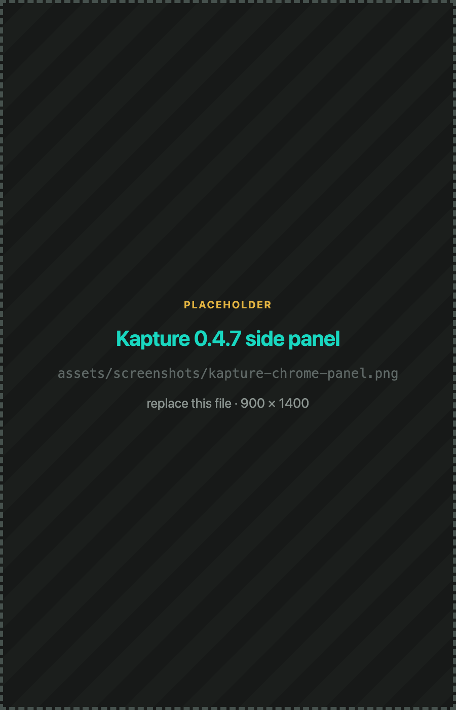

整页截图
Kapture 会滚动整个文档，从头截到尾。超长页面会按 8,000 像素分段， 文件不至于大到不好用。
Chrome 扩展程序 0.4.7 · Mac 版 Kapture Pro
Kapture 直接在 Chrome 里截取整页或指定区域， Kapture Pro 再把这些截图变成 Mac 上的本地可视化图库。
需要 Chrome 120 或更高版本。Chrome 版 Kapture 免费，Mac 版 Kapture Pro 即将推出。


Chrome 版 Kapture · 0.4.7
两种截图方式，四种文件去向，没有任何东西离开你的电脑。

Kapture 会滚动整个文档，从头截到尾。超长页面会按 8,000 像素分段， 文件不至于大到不好用。
在可见区域拖动，框出想要的部分。可选自由比例、1:1、16:9 或 9:16， 截图前还能移动或调整选区。
扩展程序里有什么
截图前先选好格式。PDF 会生成一个本地的多页文件。
按当前窗口截图，也可以先用手机 390、平板 820、桌面 1440 或桌面 1920 的宽度重新渲染页面。
按页面或项目给文件夹命名。截图会按顺序存进去，Kapture Pro 随时可以接手。
最新的排在最前，带预览、网站和时间。可以直接打开某张截图，也可以勾选多张彻底删除。
侧边栏两种主题都有，并会记住你的选择。
没有账号，没有广告，没有数据统计。截图在你的电脑上生成，也留在那里。
Mac 版 Kapture Pro
Kapture Pro 会索引 Mac 上已经存好的截图，把它们变成一个可以搜索的 可视化工作区。
每个截图文件夹都会变成一个可以随时切换的项目。
不用打开访达，按名称、网站或项目就能找到截图。
用预览图浏览一切，而不是一串文件名。
选中任意一张，就能看到尺寸、格式、来源和截图时间。
加上自己的说明，过段时间再看也知道这张是什么。
没有云端，不用同步，不用账号。它读的就是你现有的硬盘。
你的文件还在原来的地方。
Kapture Pro 只是帮你找到它们、把它们理清楚。
使用方法
截图
打开侧边栏，选整页或某个区域，再挑好项目文件夹。
保存
文件直接进 Downloads/Kapture/ 和你的项目文件夹，按顺序命名。
整理
同一个文件夹会变成可搜索的图库，方便浏览、打标签和对比。
隐私
Kapture 在你的电脑上生成截图，并通过 Chrome 自带的下载功能保存。Kapture Pro 读取的是 Mac 上已有的文件。没有任何东西被上传，两款产品都不需要账号，也都不含 分析、广告或追踪。
免费
整页和区域截图，直接存进你选好的项目文件夹。
添加到 Chrome一次性买断
搜索、整理并对比你已经截下的所有内容。
Kapture ProKapture Pro 的价格尚未最终确定。无订阅。